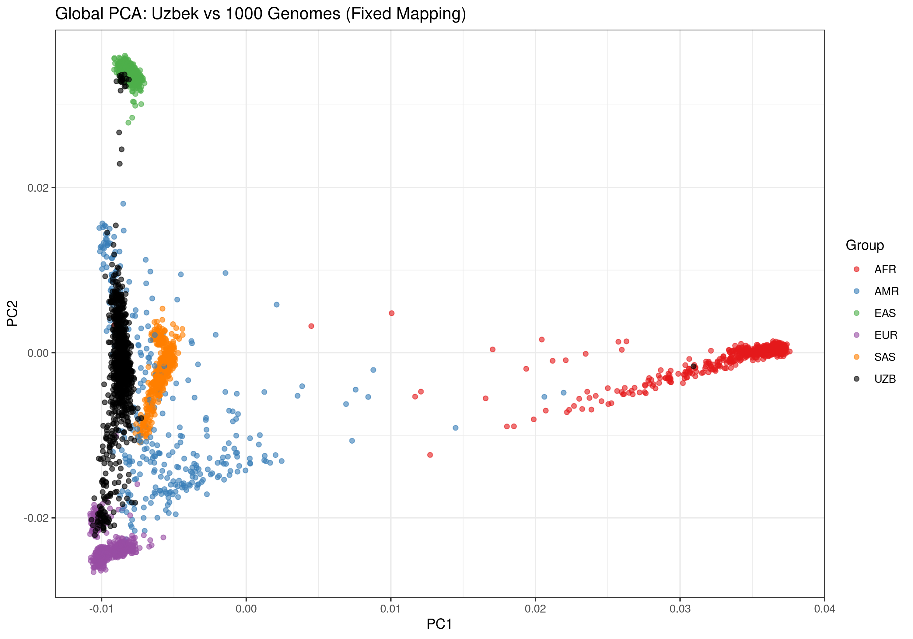
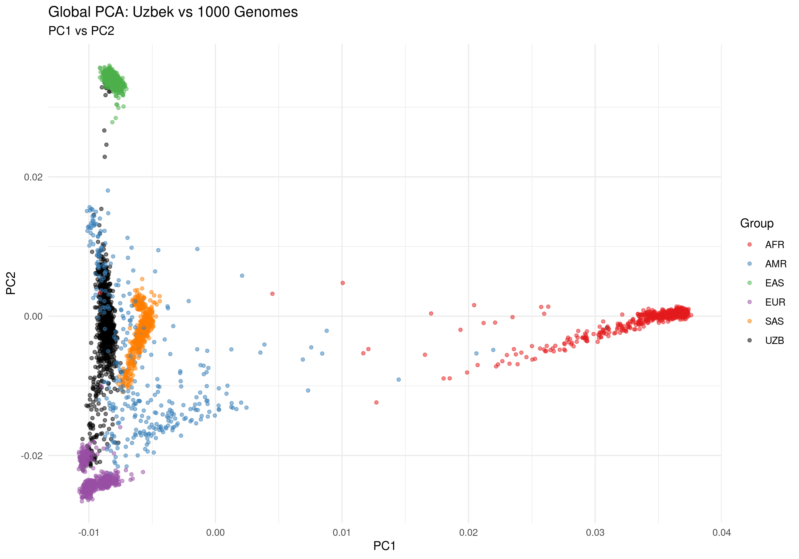
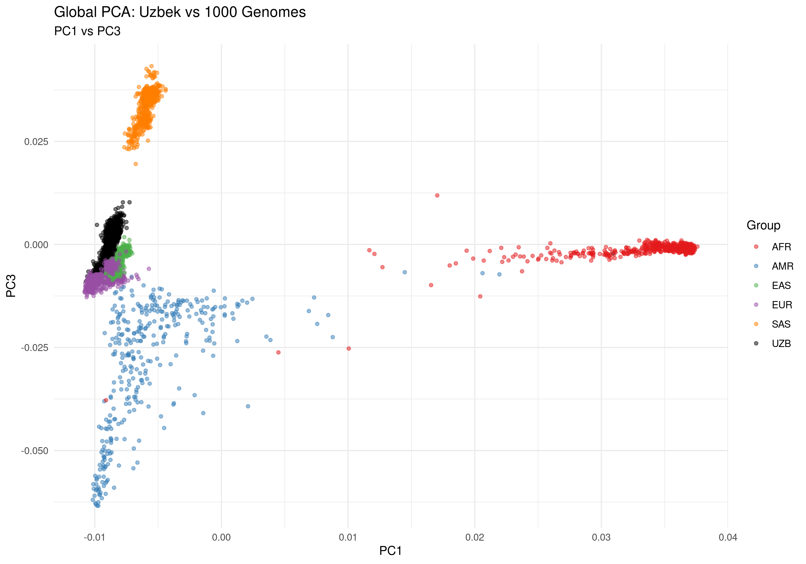
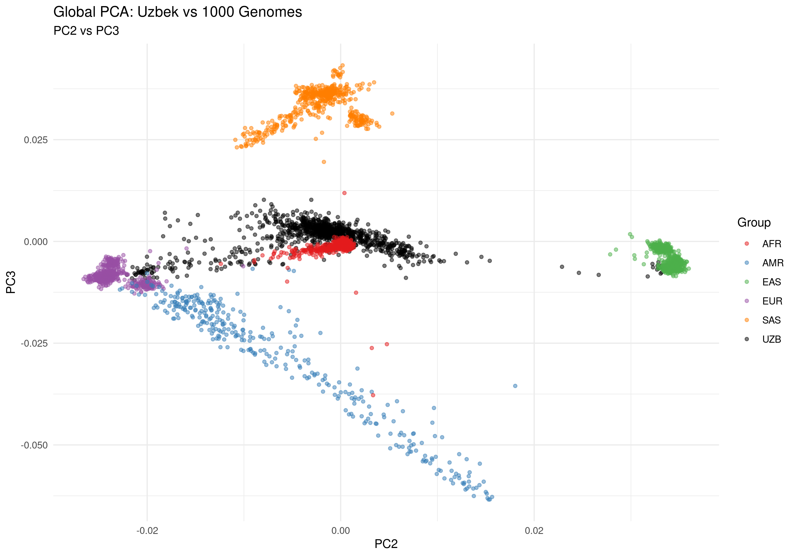
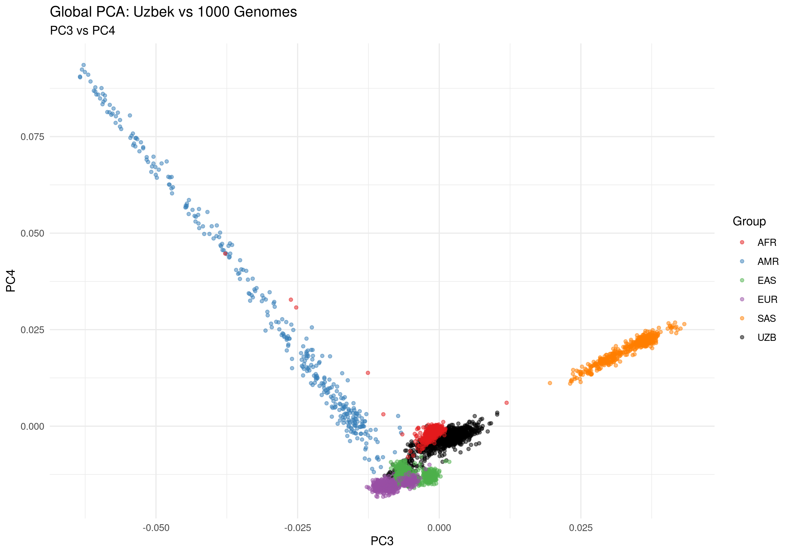
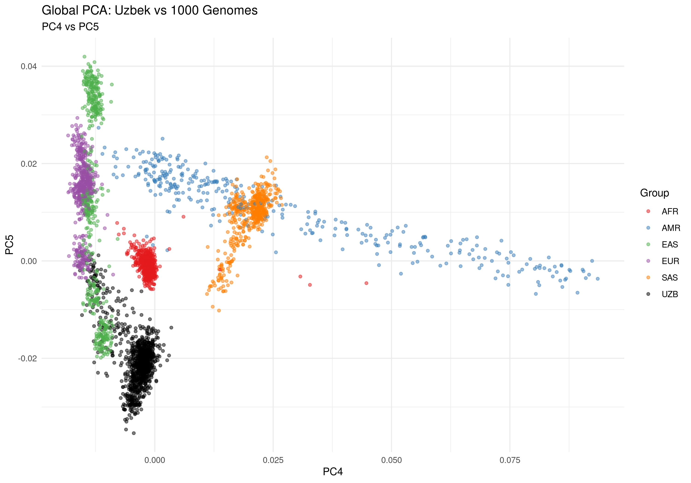

To contextualize the ancestry of the Uzbek samples within global populations, we merge our imputed dataset with the 1000 Genomes Phase 3 reference (GRCh38), then perform global PCA. This step reveals the position of the Uzbek cohort relative to major continental ancestry groups and identifies any potential admixture patterns.
← Back to Roadmap
Step 8: Global PCA with 1000 Genomes Reference
Establish ancestry context and compare Uzbek cohort to global populations
Completed — January 3, 20261. Overview
2. Input Data
| Source | File(s) | Description |
|---|---|---|
| Uzbek Data | UZB_imputed_HQ_unique.{bed,bim,fam} |
1,074 Uzbek samples, 5.38M variants (unique IDs) |
| 1000G Reference | ALL.chr*.shapeit2_integrated_v1a.GRCh38.phased.vcf.gz |
2,548 samples across 5 superpopulations (AFR, AMR, EAS, EUR, SAS) |
| Metadata | 1000g_panel.txt |
Sample IDs, population codes, superpopulation labels |
Step 1: Extract Target SNPs from 1000G
The 1000 Genomes reference contains ~80M variants. To make the merge computationally tractable and ensure proper overlap with our imputed dataset, we extract only the SNPs present in our LD-pruned list (88.3K independent variants).
Prepare Position-Based Extraction
# Define paths
UZB_DIR="/staging/ALSU-analysis/winter2025/PLINK_301125_0312/michigan_ready_chr/imputation_results/unz/filtered_clean"
PRUNED_LIST="${UZB_DIR}/UZB_pruned.prune.in"
for chr in {1..22}; do
echo "--- Working on Chromosome $chr ---"
# Create BED file with position ranges (matching VCF naming with 'chr' prefix)
grep "^${chr}:" $PRUNED_LIST | awk -F':' '{print "chr"$1 "\t" ($2-1) "\t" $2}' > chr${chr}_targets.bed
# Extract SNPs using bcftools (position-based is faster and more accurate than ID-based)
bcftools view -T chr${chr}_targets.bed \
-m2 -M2 -v snps \
ALL.chr${chr}.shapeit2_integrated_v1a.GRCh38.20181129.phased.vcf.gz \
-Oz -o chr${chr}_subset.vcf.gz
# Count extracted variants
COUNT=$(bcftools view -H chr${chr}_subset.vcf.gz | wc -l)
echo "Found $COUNT variants for Chromosome $chr"
done
--- Working on Chromosome 21 ---
Found 1348 variants for Chromosome 21
--- Working on Chromosome 22 ---
Found 1392 variants for Chromosome 22
Convert VCF to PLINK Binary Format
plink2 --vcf chr${chr}_subset.vcf.gz \
--set-all-var-ids '@:#:$r:$a' \
--new-id-max-allele-len 50 \
--make-bed \
--out chr${chr}_ref \
--threads 8
Total 1000G Variants Extracted:
83,664 (matching Uzbek LD-pruned set)
1000G Samples: 2,548 (split across 5 superpopulations)
1000G Samples: 2,548 (split across 5 superpopulations)
Step 2: Merge 1000G Chromosomes
Combine the 22 chromosome-specific 1000G reference files into a single, unified dataset using PLINK's merge functionality.
# Create merge list (excluding chr1, which serves as master)
ls chr*_ref.bed | grep -v "chr1_ref" | sed 's/.bed//' > merge_list.txt
# Merge all chromosomes
plink --bfile chr1_ref --merge-list merge_list.txt --make-bed --out KG_reference_final
Performing single-pass merge (2548 people, 83664 variants).
Merged fileset written to KG_reference_final-merge.bed + .bim + .fam.
83664 variants and 2548 people pass filters and QC.
Note: No phenotypes present.
--make-bed to KG_reference_final.bed + KG_reference_final.bim + KG_reference_final.fam ... done.
Reference Dataset Ready: 2,548 1000G samples × 83,664 common variants
Step 3: Merge Uzbek Data with 1000G Reference
Merge the Uzbek imputed dataset with the 1000G reference to create a combined dataset for global PCA analysis.
plink --bfile UZB_imputed_HQ_unique --bmerge KG_reference_final \
--make-bed \
--out UZB_1kG_merged
Combined Dataset:
3,610 samples (1,062 UZB + 2,548 1000G)
Variants Available: 5,383,967 total (matching across both datasets)
Variants Used for Global PCA: 83,664 (1000G reference set)
Variants Available: 5,383,967 total (matching across both datasets)
Variants Used for Global PCA: 83,664 (1000G reference set)
Step 4: Global PCA
Perform PCA on the merged dataset using only the 83.6K common variants. This reveals how the Uzbek samples cluster relative to the five 1000 Genomes superpopulations (AFR, AMR, EAS, EUR, SAS).
plink2 --bfile UZB_1kG_merged \
--extract KG_reference_final.bim \
--pca 10 \
--out GLOBAL_PCA \
--threads 8
Start time: Sat Jan 3 18:54:11 2026
3610 samples (0 females, 0 males, 3610 ambiguous; 3610 founders) loaded.
5383967 variants loaded from UZB_1kG_merged.bim.
--extract: 83664 variants remaining.
Calculating allele frequencies... done.
83664 variants remaining after main filters.
Constructing GRM: done.
Correcting for missingness... done.
Extracting eigenvalues and eigenvectors... done.
--pca: Eigenvectors written to GLOBAL_PCA.eigenvec, eigenvalues to GLOBAL_PCA.eigenval.
End time: Sat Jan 3 18:54:30 2026
Step 5: Create Population Mapping & Visualization
Combine PCA results with population labels from the 1000G panel, then create a publication-quality scatter plot showing ancestry composition.
# Extract population mapping from 1000G panel
awk 'NR>1 {print $1 "\t" $3}' 1000g_panel.txt > pop_mapping.txt
# Add Uzbek samples labeled as 'UZB'
awk '{print $2 "\tUZB"}' UZB_imputed_HQ_unique.fam >> pop_mapping.txt
cat << 'EOF' > plot_global_pca.R
library(ggplot2)
# Load PCA results and population labels
eigenvec <- read.table("GLOBAL_PCA.eigenvec", header = TRUE, comment.char = "")
colnames(eigenvec)[1:2] <- c("Sample", "IID")
mapping <- read.table("pop_mapping.txt", header = FALSE, col.names = c("Sample", "Group"))
# Merge data
data <- merge(eigenvec, mapping, by = "Sample")
# Define colors for each superpopulation
colors <- c("AFR" = "#E41A1C", "AMR" = "#377EB8", "EAS" = "#4DAF4A",
"EUR" = "#984EA3", "SAS" = "#FF7F00", "UZB" = "black")
# Create plot
ggplot(data, aes(x = PC1, y = PC2, color = Group)) +
geom_point(alpha = 0.5, size = 1.2) +
scale_color_manual(values = colors) +
theme_minimal() +
labs(title = "Global PCA: Uzbek Samples vs 1000 Genomes",
subtitle = "Ancestry context (PC1 vs PC2)",
x = "Principal Component 1",
y = "Principal Component 2") +
guides(color = guide_legend(override.aes = list(alpha = 1, size = 3)))
ggsave("Global_PCA_UZB.png", width = 10, height = 7, dpi = 300)
EOF
Rscript plot_global_pca.R
Visualization Complete:
- High-resolution PNG (300 dpi, 10×7 inches)
- Color-coded by 1000G superpopulation + UZB cohort
- Ready for publication or presentation
Result: Global PCA Plots
The global PCA shows where the Uzbek cohort positions relative to major continental ancestry groups. The clear separation from 1000G samples reflects the unique Central Asian ancestry of the Uzbek population. Multiple PC combinations are shown below to reveal different aspects of population structure.

Figure 1: Global ancestry analysis showing Uzbek cohort (black) against 1000 Genomes reference populations. Superpopulations: AFR=African, AMR=American, EAS=East Asian, EUR=European, SAS=South Asian
Detailed PC Combinations
Below are additional PC combinations (PC1-PC2, PC1-PC3, PC2-PC3, PC3-PC4, PC4-PC5) that capture different dimensions of genetic variation and provide a comprehensive view of population structure within the Uzbek cohort.

Figure 2a: PC1 vs PC2 - Primary population structure axes

Figure 2b: PC1 vs PC3 - Alternative ancestry dimension

Figure 2c: PC2 vs PC3 - Secondary structure patterns

Figure 2d: PC3 vs PC4 - Finer population substructure

Figure 2e: PC4 vs PC5 - Fine-scale genetic variation
Key Findings
| Finding | Interpretation |
|---|---|
| Uzbek Position on PC1/PC2 | Uzbek samples cluster distinctly, intermediate between EUR and SAS, reflecting Central Asian ancestry |
| Minimal Overlap with 1000G | Limited admixture with major continental groups; genetically distinct population |
| Internal Cohort Structure | Visible substructure within Uzbek samples suggests regional or family-based clustering |
| Data Quality | Clean separation from 1000G indicates successful imputation and QC |
3. Output Data
| File(s) | Purpose |
|---|---|
KG_reference_final.{bed,bim,fam} |
1000G reference (83.6K variants) |
UZB_1kG_merged.{bed,bim,fam} |
Merged Uzbek + 1000G dataset |
GLOBAL_PCA.eigenvec |
PCA sample coordinates |
GLOBAL_PCA.eigenval |
PCA eigenvalues |
Global_PCA_UZB.png |
Publication-ready plot |
pop_mapping.txt |
Sample-to-population mapping |
Conclusions
Global Ancestry Context Established
- Uzbek cohort successfully positioned within global ancestry framework
- Clear distinction from major 1000G superpopulations confirms Central Asian identity
- Internal structure visible in local PCA (Step 7) provides basis for stratified analyses
- Dataset ready for downstream association studies with ancestry-aware methods
Recommendations for GWAS
- Ancestry Adjustment: Include PC1 and PC2 (global) as well as local PCs (from Step 7) as covariates
- Population-Specific Analysis: Consider stratified GWAS by local PCA clusters if sufficient sample size
- Fine-Mapping: Use global PCA to assess LD patterns and refine causal variant identification
- Meta-Analysis: Compare results with 1000G populations for cross-population generalizability